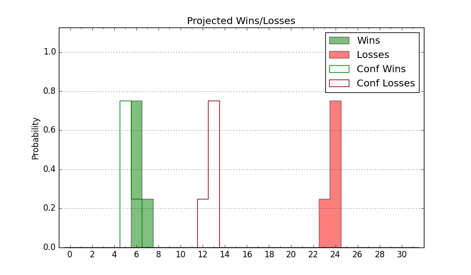

| Home | Game Probabilities | Conferences | Preseason Predictions | Odds Charts | NCAA Tournament |
| City: | Chicago, Illinois | |
| Conference: | Northeast (9th)
| |
| Record: | 5-12 (Conf) 6-23 (Overall) | |
| Ratings: | Comp.: -21.7 (342nd) Net: -21.7 (342nd) Off: 98.1 (331st) Def: 119.8 (337th) SoR: 0.0 (100th) |
| Remaining | ||||||
|---|---|---|---|---|---|---|
| Date | Opponent | Win Prob | Pred. | |||
| 2/28 | @ Wagner (318) | 24.4% | L 67-75 | |||
| Previous | Game Score | |||||
| Date | Opponent | Win Prob | Result | Off | Def | Net |
| 11/3 | @DePaul (102) | 2.9% | L 62-92 | -5.1 | -3.1 | -8.2 |
| 11/6 | @Saint Louis (27) | 0.5% | L 86-108 | 12.8 | 10.0 | 22.9 |
| 11/11 | @Butler (64) | 1.5% | L 66-98 | -1.0 | -3.1 | -4.1 |
| 11/15 | Illinois Chicago (109) | 9.7% | L 63-67 | 6.1 | 10.5 | 16.6 |
| 11/18 | @Minnesota (61) | 1.5% | L 54-66 | -0.3 | 19.7 | 19.3 |
| 11/20 | @Iowa (23) | 0.4% | L 54-93 | 6.2 | -12.3 | -6.1 |
| 11/25 | @Fort Wayne (262) | 13.4% | L 77-90 | 14.8 | -13.4 | 1.5 |
| 11/28 | @Youngstown St. (199) | 7.9% | L 64-87 | -1.9 | -2.1 | -4.0 |
| 12/6 | @Illinois St. (87) | 2.3% | L 53-95 | -6.7 | -15.1 | -21.8 |
| 12/14 | @Loyola Chicago (312) | 22.5% | W 84-75 | 14.2 | 9.3 | 23.5 |
| 12/16 | @Bowling Green (182) | 6.7% | L 55-76 | -10.5 | 4.1 | -6.4 |
| 12/20 | @Indiana (33) | 0.7% | L 58-78 | 0.7 | 25.4 | 26.1 |
| 1/2 | Wagner (318) | 52.4% | L 72-79 | 1.9 | -17.1 | -15.3 |
| 1/4 | LIU Brooklyn (209) | 24.4% | L 55-74 | -15.3 | -2.5 | -17.8 |
| 1/8 | @Fairleigh Dickinson (333) | 29.9% | L 63-70 | -10.1 | 4.0 | -6.1 |
| 1/10 | @Stonehill (331) | 28.6% | L 82-85 | 14.4 | -14.1 | 0.4 |
| 1/17 | Le Moyne (293) | 42.7% | L 57-72 | -22.7 | 4.7 | -18.0 |
| 1/19 | New Haven (327) | 55.5% | L 56-62 | -9.7 | -3.5 | -13.2 |
| 1/23 | @St. Francis PA (355) | 44.7% | L 60-81 | -21.3 | -12.7 | -34.0 |
| 1/25 | @Mercyhurst (281) | 16.1% | L 59-61 | 5.8 | 9.7 | 15.5 |
| 1/31 | Mercyhurst (281) | 39.5% | W 78-74 | 13.6 | -5.1 | 8.6 |
| 2/5 | @Central Connecticut (297) | 19.1% | L 67-78 | 3.6 | -8.3 | -4.7 |
| 2/7 | @New Haven (327) | 26.8% | W 63-57 | 10.2 | 13.2 | 23.4 |
| 2/9 | St. Francis PA (355) | 73.4% | W 80-75 | 0.9 | 0.5 | 1.3 |
| 2/12 | Stonehill (331) | 57.7% | W 68-55 | 20.8 | 0.6 | 21.4 |
| 2/14 | @Le Moyne (293) | 17.9% | L 63-81 | -9.6 | -4.7 | -14.3 |
| 2/19 | Fairleigh Dickinson (333) | 59.3% | L 59-60 | -0.7 | -10.0 | -10.7 |
| 2/21 | Central Connecticut (297) | 44.6% | W 70-51 | 3.8 | 29.8 | 33.6 |
| 2/26 | @LIU Brooklyn (209) | 8.7% | L 56-73 | -8.0 | 6.1 | -1.9 |
| Stats & Trends | |||||
|---|---|---|---|---|---|
| Current | Day | Week | Month | Season | |
| Composite | -21.7 | +0.0 | +0.9 | +1.0 | -6.0 |
| Comp Rank | 342 | -- | +3 | +5 | -18 |
| Net Efficiency | -21.7 | +0.0 | +0.9 | +1.4 | -- |
| Net Rank | 342 | -- | +3 | +4 | -- |
| Off Efficiency | 98.1 | -0.0 | -0.5 | +1.6 | -- |
| Off Rank | 331 | +1 | -5 | +5 | -- |
| Def Efficiency | 119.8 | +0.0 | +1.5 | -0.2 | -- |
| Def Rank | 337 | +1 | +10 | +3 | -- |
| SoS Rank | 241 | +1 | -6 | -94 | -- |
| Exp. Wins | 6.2 | +0.0 | +0.5 | +1.7 | -5.4 |
| Exp. Conf Wins | 5.2 | +0.0 | +0.5 | +1.7 | -4.3 |
| Conf Champ Prob | 0.0 | -- | -- | -- | -11.5 |

| Advanced Stats | ||
|---|---|---|
| Stat | Value | Rank |
| Off Eff FG % | 0.444 | 356 |
| Off Ast Ratio | 0.132 | 264 |
| Off ORB% | 0.275 | 255 |
| Off TO Rate | 0.139 | 128 |
| Off FT Ratio | 0.291 | 328 |
| Def Eff FG % | 0.574 | 347 |
| Def Ast Ratio | 0.199 | 365 |
| Def ORB% | 0.369 | 349 |
| Def TO Rate | 0.161 | 73 |
| Def FT Ratio | 0.412 | 306 |